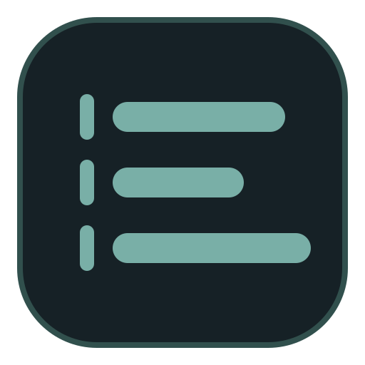
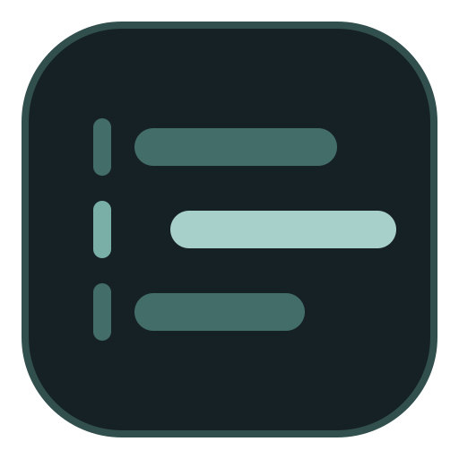
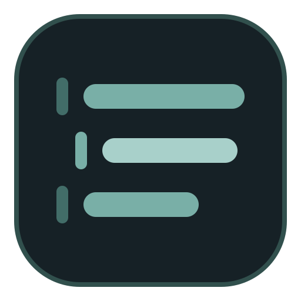

A · Docked
Calm, balanced, closest to the current mark.
Three shelf-module directions, shown large and at Windows icon sizes.

Calm, balanced, closest to the current mark.

One active workflow is pulled from the shelf.

A moving sequence with more technical energy.